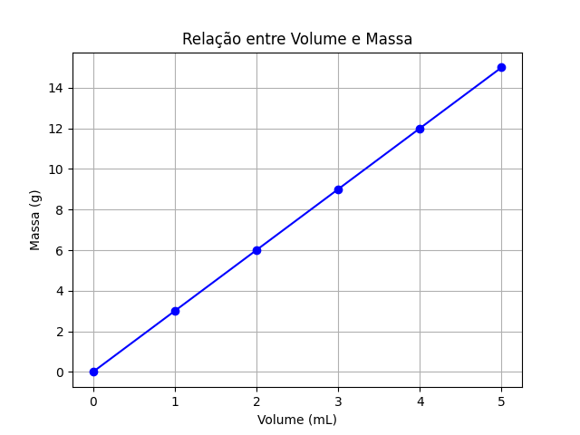

Pré-física
Grandezas e Unidades de Medida
As grandezas físicas são conceitos aos quais podemos atribuir valores numéricos, enquanto que as unidades de medida são padrões de medida para cada grandeza correspondente.
Na tabela abaixo estão algumas grandezas físicas com correspondentes unidades de medida:
| Grandeza | Unidade (Nome) | Unidade (Símbolo) |
|---|---|---|
| Massa | Quilograma, Grama | kg, g |
| Volume | Litro, Mili-litro | L, mL |
| Densidade | Grama por mili-litro | g/mL |
| Comprimento | Metro, Centímetro | m, cm |
| Tempo | Hora, Segundo | h, s |
Equações
As equações na física são relações matemáticas entre grandezas. Considere os seguintes dados de uma substância hipotética:
| Massa (g) | Volume (mL) | Densidade (g/mL) |
|---|---|---|
| 3,0 | 1,0 | 3,0 |
| 6,0 | 2,0 | 3,0 |
| \( ? \) | 2,5 | 3,0 |
| 10,5 | \( ? \) | 3,0 |
| 15,0 | 5,0 | \( ? \) |
A densidade é calculada dividindo a massa pelo volume. Essa relação pode ser escrita como:
\begin{equation} d = \frac{m}{V} \end{equation}Onde:
- \( m \) = massa
- \( V \) = volume
- \( d \) = densidade
Com dois valores conhecidos, podemos calcular o terceiro.
Gráficos
Gráficos são ferramentas visuais importantes para representar dados e relações entre grandezas físicas. Eles ajudam a identificar padrões e tendências.
Como exemplo, os dados abaixo,
| Volume (mL) | Massa (g) |
|---|---|
| 1,0 | 3,0 |
| 2,0 | 6,0 |
| 3,0 | 9,0 |
| 4,0 | 12,0 |
| 5,0 | 15,0 |
Podem ser representados pela figura

Figure 1: Gráfico que relaciona os valores de massa e volume da tabela anterior.
Grandezas diretamente proporcionais e grandezas inversamente proporcionais
Grandezas proporcionais são grandezas que crescem (ou descressem) na mesma proporção. Ou seja, se uma delas dobra o seu valor, a outra também dobra o seu valor. Se uma cresce triplica, a outra também triplica o seu valor. Como exemplo, a relação entre a grandeza distância percorrida e a grandeza tempo de percurso percorrida com uma certa velocidade constante (valor fixo) de 20m/s) , representada na tabela abaixo:
| Distância percorrida (m) | Tempo de percuso (s) |
|---|---|
| 20 | 1,0 |
| 40 | 2,0 |
| 80 | 4,0 |
| 100 | 5,0 |
Podemos perceber que a razão entre os dois valores correspondentes se mantêm:
\begin{equation*} \frac{20}{1}=\frac{40}{2}=\frac{80}{4}=\frac{100}{5} \end{equation*}A notação matemática para essa correspondência de proporcionalidade direta pode ser uma das três possibilidades abaixo:
\begin{equation} d \sim t \qquad \text{ou} \qquad \frac{d}{t} = {constante} \qquad \text{ou} \qquad \frac{d_1}{t_1}=\frac{d_2}{t_2} \end{equation}Onde:
\( d \) = Distância percorrida,
\( t \) = Tempo de percurso.
Já grandezas inversamente proporcionais são aquelas em que, quando uma cresce (aumenta), a outra decresce (diminui) na mesma proporção. Como exemplo as grandezas velocidade e tempo decorrido para percorrer uma distância fixa de 20 m representadas na Tabela abaixo:
| Velocidade | Tempo para percorrer 20 m |
|---|---|
| 1,0 m/s | 20,0 s |
| 2,0 m/s | 10,0 s |
| 5,0 m/s | 4,0 s |
| 10,0 m/s | 2,0 s |
Nesse caso podemos perceber que é o produto entre as grandezas que se mantêm constante:
\begin{equation*} 1 \times 20 = 2\times 10 = 5 \times 4 = 10 \times 2 \end{equation*}Temos as seguintes possíveis representações matemáticas para duas grandezas inversamente proporcionais:
\begin{equation} v \sim \frac{1}{t} \qquad \text{ou} \qquad v\cdot t = \text{constante} \qquad \text{ou} \qquad v_1\cdot t_1 = v_2 \cdot t_2 \end{equation}Onde:
\( v \) = velocidade,
e
\( t \) = Tempo de percurso.
Questões de revisão: Grandezas diretamente proporcionais e grandezas inversamente proporcionais
Revisões de tópicos de matemática básica
Operações com frações
- Soma de frações
Para somar frações precisamos de um múltiplo comum. Em geral, escolhemos o Mínimo Múltiplo Comum (m.m.c). Exemplo:
\[\frac{2}{3} + \frac{3}{2} = \frac{2\cdot 2 + 3 \cdot 3}{6} =\frac{4+9}{6}= \frac{13}{6}\]
- subtração de frações
A subtração é análoga.
\[\frac{3}{4} - \frac{2}{3} = \frac{3\cdot 3 - 4\cdot 2 }{12}=\frac{1}{12}\]
- Multiplicação de frações
\[\frac{3}{2}\cdot \frac{2}{3} = \frac {3\cdot 2}{2\cdot 3} = \frac{6}{6}=1\]
- Divição de frações
\[ \frac{3}{4}:\frac{6}{2} = \frac{3}{4}\cdot\frac{2}{6} = \frac{1}{4}\cdot\frac{2}{2} = \frac{1}{4} \]